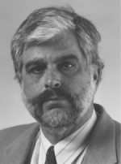

| This article appears in the September 2001 Issue of SIGMOD Record (Volume 30, Number 3) |
| The article is also available in the following formats: PDF (59KB) and gzipped postscript (74KB). |
Marianne Winslett, editor
Welcome to the first article in a new SIGMOD Record column: Distinguished Database Profiles, featuring interviews with pillars of the database community. I am not much of a traveler, but I plan to leave my nest in east central Illinois to bring you a new interview in each issue. In June I traveled to California to join in the festivities associated with Professor Gio Wiederhold's retirement from Stanford University. While there, I interviewed Gio and his fellow professors Jeff Ullman and Hector Garcia-Molina, so you will find conversations with all three of these Stanford faculty members in upcoming issues of the Record.
To let the conversation flow freely and easily, I decided to videotape the interviews and transcribe them later. One advantage of this approach is that we think we will be able to put the video itself on the SIGMOD web site, so you can directly hear what each pillar has to say. Once the videos are available, I do recommend watching them directly, because I have found that many nuances of the message are lost when I reduce it to the printed word.
I also found that the transcriptions themselves were a challenge to produce. I have edited out the "ums", "ers", "ands", and sentence fragments that are part of normal conversation, but are just a distraction in print. I've reordered or trimmed out questions when that makes for better reading, and I've edited for length as needed. I'm sure I've made plenty of errors of my own in transcription, too, and for these I apologize to my readers and interviewees. Again I refer you to the video itself as the final arbiter of meaning.
My inaugural interview is with Jeff Ullman, a prior recipient of a SIGMOD Award. Jeff has been a faculty member at the Department of Computer Science at Stanford for many years. As I am sure my readers know, Jeff is famous for his contributions to database theory and to computer science education, in the form of his popular textbooks. I chose to publish Jeff's interview first, because of his timely comments on the status of startup companies and their role in the life of PhDs.

Jennifer Widom told me that you have a unique vision of the future of education on line---something about course packages. Can you tell us about this?
Here is how I think it should work. There's a lot in college education that requires intensive involvement from an instructor. There's nothing like sitting down one on one or in a small group helping people debugging. [This aspect of] computer science is certainly a very one on one process, and [so is the college experience of] just generally talking to people about life and [about] how to deal with the world. I think this is a wonderful aspect of residential college education. On the other hand, we [college educators] have not improved our productivity since the 1200s, or something like that. What I would like to do is to become an [Application Service Provider (ASP)] for providing those parts of the college education that are best provided centrally, and work in conjunction with local instructors to provide excellent teaching with far fewer people than we now use. In particular, I think lectures should be centralized.
What most of the open universities, or similar organizations, [have done is to] create a package, and say here's our package: if you want to learn about database systems, this is what everyone needs to know. I'm not quite that presumptious, although obviously I'd like everyone to learn from my books. But we presume that different instructors will have different ideas as to what needs to be taught. They should be able to pick lectures or other educational materials from a menu, and have some reasonable flexibility as to the order. Obviously you can't throw topics at students quite at random -- you have to have some kind of prerequisite structure -- but basically I'd like to give all database instructors the option to take 30-40 hours of lecture on the topics of their choice to present as their course. [This would] save them the trouble of preparing the lectures, preparing the [lecture] notes, putting the notes on line, and making Powerpoint slides or whatever people do these days. [Those things] can be done essentially once and for all, centrally, at a huge cost savings.
Another essential of database instruction, and computer science instruction in general, is what I think of as a 24/7 help line. You as a student should be able to send email and [have] some TA somewhere in the world pick [your email] up and give you an answer immediately, or as fast as is possible. This is especially important when people are learning to use a system and essentially encounter a bug. Instead of spinning their wheels as many students do, or having to wait two days for the next office hours or class, they should be able to get 2-minute or 5-minute turnaround, and solve their problem, go on, and continue working.
In the database arena, one of the things we've found very important in our intro course is that the students do a real project using a real SQL system. We happen to use Oracle. The students have to decide on an application, do a design and convert it to a relational schema, and do various kinds of programming, including C with embedded SQL. These kinds of experiences are very important. It is my understanding that many schools find it very hard to maintain a real database system. It certainly it has been touch and go at Stanford. Whenever we get a DBA [who] is sufficiently trained, they go and leave. So it seems like this is something that should be done centrally. In fact I recently learned that IBM has been doing this over the web for a number of schools. I hope to get this done on a larger scale and eventually have a central organization that provides real database management system service to any school that requests it.
Are you thinking of SIGMOD doing this, or Stanford?
We call it 145.com (145 is our introductory [database] course). What I would like to do eventually is create a company that, starting off with functioning as an ASP for database instruction, moves out to all of computer science, or at least mezzanine level computer science. My intent is not to try to touch intro programming, and obviously the very high level courses [are] very hard to do in a centralized way, because [the very high level] courses tend to be unique, research-oriented [Their] content is fairly ephemeral anyway. And then what I'd really love to do is to handle all instruction this way. There are so many schools that can't hire a database instructor at all, or in many cases can't even hire anyone in computer science. It's probably of great benefit to the school as well, and in particular to the faculty, [when] there are CS faculty at a school [and] they can't cover all the courses they need to cover. [Then] having this sort of ASP would be a great benefit.
Of course, where the rubber hits the road is when we start doing this in History and English and Psychology and so on, where there are plenty of faculty and you don't need them all. That of course will be the interesting test, as to whether schools will recognize that they can fire two-thirds of their humanities faculty, and let the remaining third do the things that faculty do best, and have the classroom instruction outsourced.
What kind of timetable do you have for this?
I don't know ... according to my timetable, this is already done! I'm hoping to do an experiment next year. I'm still trying to get a database system vendor to agree to cooperate; [maybe] by the time this gets published I'll be able to say something more about that. We are talking to some major companies that do seem to be interested in helping out.
Do you see this as a US thing, or worldwide?
I see it as worldwide. I guess you have to organize by language. There are certainly a lot of places where either instruction is in English, or some of the instruction is in English. I'd like to try to couple those in. In fact we do have some contacts overseas who are interested in doing this.
Any ideas on what the pricing structure would be, say for an intro database course?
I did a back of the envelope [calculation], and I can deliver this for $200 a student. But that's just the back of the envelope.
I've been told that you have said, "Theory is obsolete." Can you expand on this?
Theory is really obsolete. (Smiles.)
I don't think I actually ever quite said that. It depends on who I am talking to. If I'm talking to a theoretician, I will say something like that. If I am talking to someone who is a practitioner, I would stress the fact that theory is far more essential than they believe [it to be]. And I think both points of view are true.
When I started out in the late 60s, we were just coming off triumphs like Don Knuth's LR(k) parser, which uses a huge amount of quite deep theory to do something that people were trying very hard to do. After Knuth's 1965 paper, a good number of deep theoretical developments were needed to bring you yacc. Once yacc was there, what took John Backus and his team I-don't-know-how-many person years to build a parser for Fortran, [now] becomes an afternoon's project. It was a huge triumph for theory, and we did have this sort of naive view that everything was going to yield to theory once we got it going. And that turns out not to be true. (Sighs.)
On the other hand, I worry about people who follow this mode of behavior where you start your research by being given some papers to read and your advisor says, "Look, can you do this stuff any better?" And so you think, and you modify the assumptions a little bit -- never mind whether the modification of the assumptions makes any sense -- but you tweak things, you get some ideas, you get some algorithms, you get some theorems, whatever, and then you publish another paper. Then five years later, some other student is looking at your paper and tweaking it further. The whole thing just sort of wanders away from reality.
Computer science is in some sense blessed with the power to think about abstractions, things that are not physically based. I think is a great part of what makes computer science exciting and [gives us] a powerful set of tools, but [I think it also creates] a big risk. You see this [risk] time and again in deeply theoretical communities where they just solve problems for their own amusement and pretend that [what they are doing] has some utility. I should say, obviously, that I have been as guilty as the next person of doing this.
On the other hand, talking of the more pragmatic among us, it's very easy [for them] to dismiss theory because it doesn't solve exactly the problem you want to solve. The fact is that there are a very large number of concepts that have gotten into our consciousness and made thinking about problems much easier than they would [otherwise] be. For example, we did a lot of work on dependency theory, lossless joins, multivalued dependencies, this dependency and that dependency. We thought that it would lead to automatic [schema] design or something like that and it never really did. But [everybody who is going to design databases has] got to understand what functional dependencies are. They have to understand what they are giving up when they normalize something. These are things that let you talk about issues that the typical person wouldn't even be able to articulate if you didn't have the theory behind it. That is why I have always, in the database community, pushed for people to take theory much more seriously than it was taken, let's say, in 1980.
Another quote I've heard attributed to you is, "A successful business plan should be accepted as a PhD thesis."
I don't know what a successful business plan is. There are successful businesses.
It has occurred to me that startup fever isn't quite what it was, but [startups are] probably a mode of investigation that is here to stay. [We] have a situation where major corporations have no internal research. Companies like IBM have always had a substantial basic research program in-house, and I think they've benefited from it. Lucent, Bell Labs, [or] whatever Bell Labs was part of at the time, has [always] had [a substantial basic research program in-house]; I don't know how long that's going to last. Microsoft has obviously invested a lot of money in [basic research in-house]. But there are also companies like Oracle or Cisco that really do not have in-house basic research programs. These companies need an influx of ideas, and they have been paying, obviously, ridiculous amounts of money for little companies that in some sense embody some good ideas.
I do think that one of the best ways to demonstrate the validity of your ideas is to start a company that produces something that people want. I think that students should be given the freedom, instead of taking their ideas and publishing them as journal articles that no one reads, [to] get [their] venture capital, start a company, [and] sell it to a company that really wants that stuff. I want to emphasize that we've gone through a horrible boom and bust phenomenon, but the long term trend is in this direction. More students are going to be starting companies based on their thesis work. More good ideas are going to be demonstrated to be good by the route of the startup rather than throwing it out in a journal and having somebody read about it ten years later and try to do something with it if they wish.
So is the PhD degree irrelevant then?
No. No, I think it's a demonstration that you have learned how to do research, how to innovate, how to take a problem from [the stage of] what's the question worth solving, to how do I bring to bear [upon the question those] things that are known in my field, how do I invent the things that should be known in the field but aren't, and how do I put them together.
The archetypical dot com was three MBAs with a business plan to [take] something that everybody was doing anyway, [and] move it to the web. This is not a computer science PhD embodiment. This is just nonsense, and it's [now known] to be nonsense. But there are also lots of good technical ideas that have made it into the marketplace through startups. I'm very proud, for example, of my former students at Junglee, who took some of the work we'd been doing on information integration and said, "Hey, this is something we could do on the web." Of course, they were very lucky, their timing was just right. But the fact is that they had some really good ideas and good technology, they were out there first. I think Google is another example; there is a really important idea or two that makes their search better than everybody else's. To write a PhD thesis on that, where you get five undergraduates to tell you whether they like Altavista's response better than Google's response, that's kind of dumb. It doesn't really mean anything. So you go out there, you start a company -- I guess, what, Inktomi was the principal provider of search before Google came along, now everybody uses Google's search. That's a demonstration that the ideas work, and it's a lot better than proving some asinine theorem or doing the experiment with five undergraduates who tell you which search they like better.
A couple of years ago when I was recruiting for new database faculty members, I think you told me that you didn't see any reason why a graduating PhD would want to go into academia. Do you still feel the same way today, or have things changed --- do you think they should all be in startups?
Well, I would say this: certainly the startup experience probably makes them a better instructor in the long run. There's no question that with [venture capitalists] having blown off millions of dollars on nonsensical projects, it's much harder for really good ideas to get money these days. So I have noticed that academic positions are being taken a little bit more seriously [now]. But I have to say, [and] I probably said it [when I was talking to you about recruiting], it's a lot tougher to be a faculty member now than it used to be. [It used to be the case that] the government recognized that it was important to make sure that computer science faculty had the money they needed to do their research, because it was in the nation's interest to produce more computer scientists. [The latter part] seems to be true today; I mean, we didn't use to talk about IT worker shortages back in the 60s and 70s. There probably was a shortage [back then]. Now there certainly is, yet the government doesn't feel that it needs to do anything to keep first-rate faculty in the classroom. And of course at research universities --- well, you know the story.
I do, although our readers might not.
Well, you're writing the article, so you can fill it in. And it's kind of hard to advise a student to take a teaching position if they have an opportunity either to take a first-rate industrial research position or get involved in a startup.
While we are talking, we are sitting in your office here at Stanford. So why are you still here?
I'm not, I'm retiring. […]
And going to a startup?
No, [I plan to] just hang around. Do things. Write books. Consult a little bit. I'm much too old to do a startup.
Do you have to be young for that?
It seems to be [so]. The [energy] level that's required to do a good startup is very high. I've seen kids do this, and when I was [their] age, I suppose I could put in that level of effort too, but I sure can't now. I think that's fair.
I've lived through the startup experience too, at home. And as a result, you don't see me out there at a startup.
You didn't say much about industrial labs ... are they still attractive?
There are some good jobs out there [at industrial labs]. In proportion to the population, there are probably as many good industrial basic industrial research jobs for computer science PhDs as there ever were. But in terms of the fraction of the population, it's probably very much lower than it was 20, 30 years ago. I find that the students will very seriously consider an offer from Microsoft, from IBM Almaden. We've had some students go to Lucent. Where else? There may be a few smaller places. There's a certain class of student that would like nothing better than to work at Xerox PARC, although I'm not sure what the prognosis is there. And again, I'm sure there are a couple of other really nice places to work in industry. But there's no question that industry has not felt the need to invest in, not so much the basic research ... we all know you never get your return on basic research. What you do [when you invest in basic research is that] you create an ambiance for your company. This is what Bell Labs was doing when I joined Bell Labs [after finishing my PhD]. They didn't care what I did for two years. They wanted to be known as the place that could really get anybody they wanted to come there. Most people, after they've done their basic research for a couple of years, wind up as leaders in advanced development, for example, and that just had a wonderful effect on the quality of Bell Labs people. I think IBM at the same time was doing the same kind of thing. It became a channel for talent. There are companies, Oracle, Sun, HP, that have really never gotten [the idea] that you bring in talent though your basic research arm, [and then] they spend two years doing basic research and 38 years doing some wonderful, very creative and yet corporate-valuable stuff.
What piece of work of yours are you the most proud of?
(Without a moment of hesitation.) Two way deterministic classes of automata.
And why that?
It's just the coolest damn theorem. [Al] Aho and I did this, spent three days batting the thing around, finally got the whole thing together. Oddly enough, the person who got us thinking about it was Jim Gray. Jim's thesis was on two-way deterministic push-down automata. He had a result, which is actually very easy to prove for two-way push-down automata --- a push-down automaton is the usual thing for context-free languages but you're allowed to go both ways on the input head. [Jim's] proof of the characterization of that class of language made heavy use of push-down automata. We didn't know how he had done it, we [only] heard the result [itself], and we envisioned how to do it in general, without making use of the particular properties of the push-down automata.
And Aho, if you ask him, he will tell you ...
It's his favorite too?
Yes.
If you could change one thing about yourself as a CS researcher, what would it be?
I think my biggest failing has been that I have spent too much time doing pencil and paper stuff and not going out there and hacking. I'm just too old and fat and lazy now to do it and I probably should have disciplined myself in earlier years to do that.
What do you think is the most exciting trend in technology today?
The most exciting trend?
Oh, it doesn't have to be the most. A most exciting trend.
There are rather a whole lot of things going on… probably the thing that is making the most difference is the connectivity that's being established, the fact that technology has finally gotten to the point where everybody is part of one world network. I think that there are, within that, a number of trends that are important to really implement the vision [of one networked world]. I think we're just beginning to turn the corner [on achieving that vision]. I was just reading an article, for example, yesterday in the [newspaper], on how 98% of teenagers [(or something like that)] use instant messaging, and 13% of all teenagers have asked someone out [on a date] using instant messaging. Our lives and how we relate to each other are… it's a big change and it's happening very fast and it's not exactly a database problem, but it's a combination of computers and communications and the web and the databases, and the wireless technology is going to make yet another big difference in how connected we are and how we relate to one other.
Does that mean that there are things that database people are not working on, that they should be working on?
Not necessarily. Obviously the boundaries of databases -- what's a database person, and what's a database problem -- I think that's evolving. I think this has been said many times in the community: we have to think broadly about what a database problem is, and what the core of database technology is. I would hesitate to make a short list of what is database stuff and what isn't.
I didn't actually mean it that way. I meant problems that no one is looking at, but that people should be looking at.
You have people looking in these areas. Lots of people, for example, are interested in wireless communication in one aspect or another. I don't know if that's a big thing in the database community. I have seen work on databases for maintaining locality, tracking you as you go from cell to cell or wireless company to wireless company. There are some interesting problems there. I don't think it's necessary that we all attack this kind of problem, or problems in broadband communication. There are people who do multimedia databases, and [look at the question of] how fast can you deliver streaming video. These are all interesting problems, [but] I don't think it's something that we all have to be working on.
What words of advice do you have for fledgling or midcareer researchers or practitioners?
I could give you some old cliche; about making sure you're having fun, because if you're not having fun, you probably need to be doing something else.
You have to decide what game you are playing. What are you going for? Are you going for reputation, are you going for dollars, are you going for happiness? There was this board game I used to play, where you had to decide on your goals, which could involve fame, and money, and happiness. Those are sort of the big three [potential life goals]. You had to decide in advance what proportion was important to you. It's important that people decide what it is they are going for, and then make sure that your decisions reflect that. Don't be afraid to be aggressive and change course.
Great, thanks!
-
profiled by Marianne Winslett <winslett@cs.uiuc.edu>
| Back to the Table of Contents | 05 August 2001 |